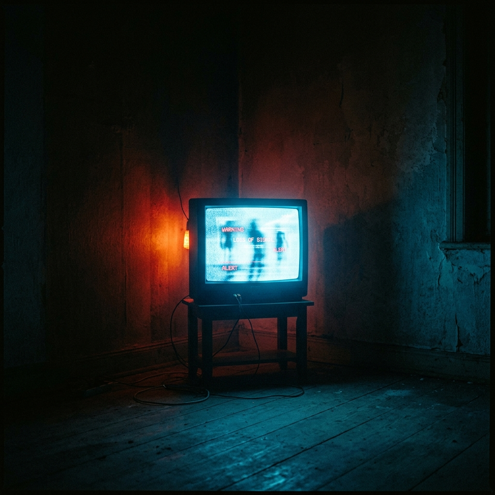
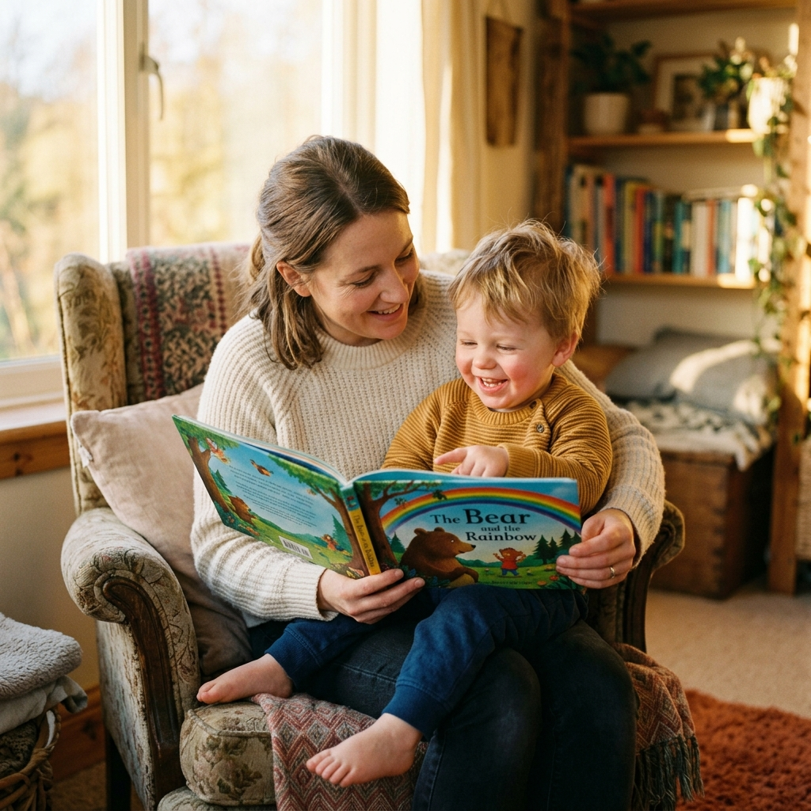
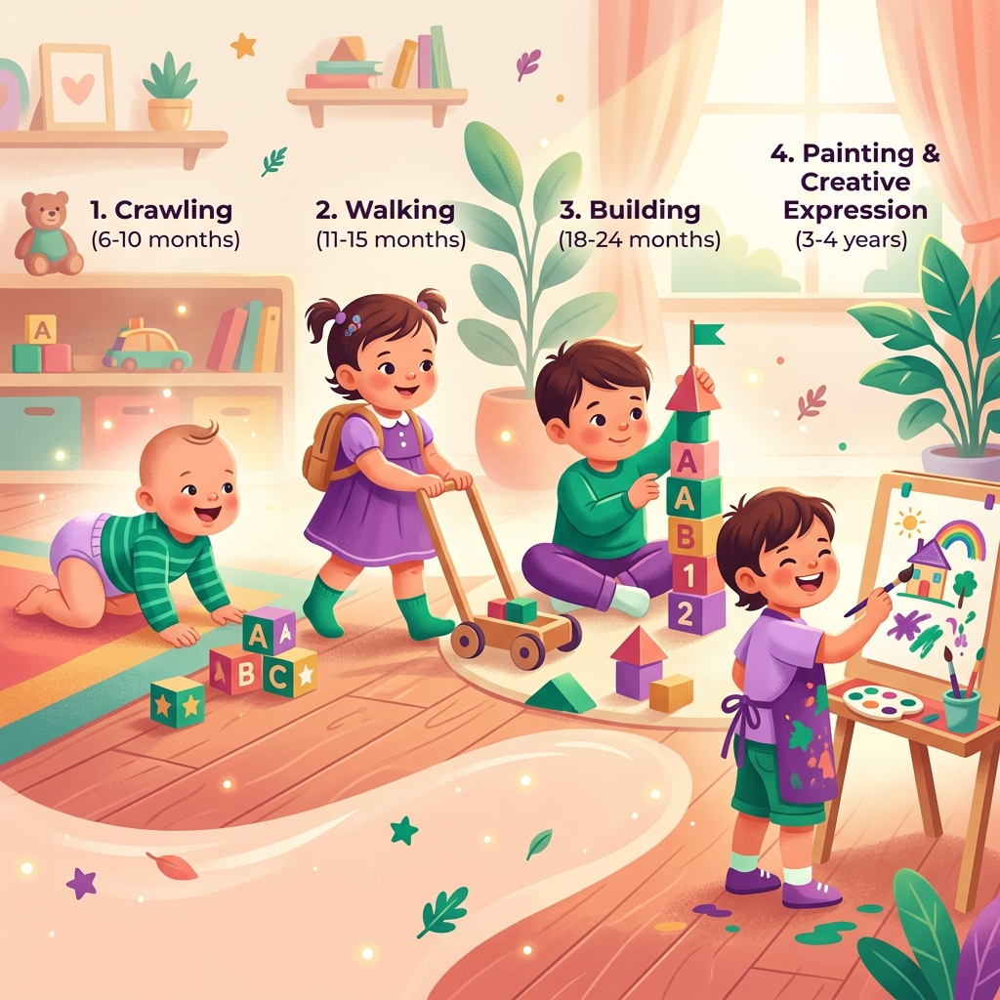

Giáo sư Shichida Makoto — Nuôi dưỡng thiên tài từ tình yêu thương và giáo dục sớm từ sơ sinh
Thời gian đọc ước tính: ~35 phút (8,800 từ) |
Độ khó: Trung bình (Dễ tiếp cận nhưng sâu sắc về sinh lý não bộ)
Khái niệm cốt lõi: Tinh thần hấp thụ thai sinh · Quy luật tài năng giảm dần · Khắc ấn (Imprinting) & Tác hại TV · Học nguyên mảng · Phản hồi liên kết (1+1+α)
Tóm tắt một câu: Trẻ nhỏ có năng lực học tập thiên tài thông qua các giác quan và cơ chế khắc ấn trong những năm đầu đời, nhưng tài năng này sẽ giảm dần theo thời gian nếu thiếu môi trường kích ứng giàu tình yêu thương từ cha mẹ. Ch 1, p. 4
Bối cảnh đặt ra (The Setup): Hầu hết cha mẹ hiểu lầm rằng sự phát triển ngôn ngữ và trí tuệ của trẻ là tự nhiên, dẫn đến việc bỏ lỡ giai đoạn vàng phát triển não bộ (từ sơ sinh đến 3 tuổi) khiến năng lực thiên tài bẩm sinh bị thui chột thành người bình thường. Ch 1, p. 4-5
Luận điểm cốt lõi (The Argument): Não bộ trẻ sơ sinh có tính thích nghi môi trường cực kỳ cao ("tinh thần tiếp thu mang tính thai sinh"). Bằng cách tạo ra các kích ứng giác quan phong phú và lặp đi lặp lại cùng sự vỗ về yêu thương, cha mẹ có thể xây dựng các liên kết tế bào não (đường mòn phản hồi) bền vững trước khi não bộ hoàn thiện ở tuổi lên 6. Ch 1, p. 4, 9
Bằng chứng & Minh họa (The Evidence): Giáo sư dẫn chứng phương pháp kích ứng giác quan của Maria Montessori, quy luật khắc ấn của Konrad Lorenz trên động vật để cảnh báo tác hại của TV, ví dụ về khả năng học tiếng Anh nguyên mảng của trẻ sơ sinh, và câu chuyện giáo dục sớm thành công của vợ chồng Stoner (con đỗ đại học năm 9 tuổi). Ch 1, p. 4, 5, 8, 12
Hệ quả thực tế (The Implications): Giáo dục không bắt đầu từ khi trẻ đi học tiểu học (6 tuổi) mà phải bắt đầu ngay từ 0 tuổi. Cha mẹ cần chủ động nói chuyện, cho trẻ xem tranh đẹp, nghe nhạc hay và cho phép trẻ tự do vận động, sáng tạo không cấm đoán. Ch 1, p. 6, 11-13
Điểm gây tranh luận (The Controversy): Việc khẳng định "não bộ trẻ 6 tuổi trở đi không thể thay đổi hay hình thành liên kết mới" đi ngược lại với khám phá về tính mềm dẻo của não bộ (neuroplasticity) trong khoa học hiện đại, vốn chứng minh não người lớn vẫn có thể học hỏi và thay đổi. Ch 1, p. 9
Mối liên hệ hệ thống (The Connection): Chương này đặt nền móng lý thuyết (đặc biệt là 3 giai đoạn phát triển và 2 phương thức học) để triển khai các chương trình thực hành cụ thể theo từng nhóm tuổi ở Chương II và xử lý khó khăn lễ nghĩa ở Chương III. Ch 1, p. 10

| Tiêu chí | Học kiểu nhớ nguyên mảng (Pattern Learning) | Học kiểu nhớ từng cái một (Incremental Learning) |
|---|---|---|
| Độ tuổi vàng | 0 - 3 TuổiPhát triển mạnh nhất giai đoạn 0-1 tuổi; giảm dần và biến mất hoàn toàn sau 6 tuổi. Ch 1, p. 8 | Mọi lứa tuổiBắt đầu phát triển từ hơn 1 tuổi và duy trì suốt cuộc đời. Ch 1, p. 9 |
| Cơ chế hoạt động | Hấp thụ và chụp lại toàn bộ khối thông tin phức tạp (hình ảnh, âm thanh ngoại ngữ) trực tiếp vào vùng tri thức tiềm tài mà không cần hiểu nghĩa. Ch 1, p. 8 | Nhớ từng đơn từ hoặc chi tiết riêng lẻ bằng cách lặp đi lặp lại để kích thích liên kết tế bào não tạo đường mòn phản ứng. Ch 1, p. 9 |
| Độ phức tạp thông tin | Càng phức tạp càng tốt (như cấu trúc ngữ pháp ngoại ngữ, nhạc giao hưởng cổ điển) vì giúp tạo nếp nhăn phản hồi phức tạp trong não. Ch 1, p. 8 | Đơn giản và thực tế (tên gọi các đồ vật, con vật, hiện tượng quen thuộc trong sinh hoạt hàng ngày). Ch 1, p. 9 |
| Nỗ lực & Lặp lại | Không nỗ lực, diễn ra trong vô thức. Ví dụ: trẻ nhỏ tự tạo máy phát âm đúng giọng tiếng nước ngoài được nghe qua băng đĩa. Ch 1, p. 8 | Đòi hỏi lặp lại nhiều lần (từ đầu tiên cần hàng ngàn lần, các từ sau cần số lần lặp ít hơn do đường mòn phản ứng đã hình thành). Ch 1, p. 9 |
| Phương pháp áp dụng | Môi trường thụ độngCho nghe băng tiếng Anh, nghe nhạc cổ điển, kể chuyện truyện cổ tích giàu từ tượng thanh, treo tranh nổi tiếng quanh phòng. Ch 1, p. 8, 11 | Tương tác chủ độngChỉ vào đồ vật thực tế hoặc tranh ảnh và lặp lại rõ ràng tên gọi ("đây là quả bóng", "kia là con mèo"). Ch 1, p. 9 |
Vùng não trội: Bán cầu não sau phát triển mạnh, kiểm soát thị giác và tri giác.
Đặc điểm: Thính giác phát triển sớm nhất (hoạt động ngay sau sinh). Tiếp theo là thị giác và xúc giác.
Trọng tâm giáo dục: Cung cấp kích ứng thính giác (nhạc, đọc thơ) và thị giác (tranh ảnh đẹp) để xây dựng nếp nhăn thần kinh đầu tiên. Ch 1, p. 10
Vùng não trội: Bán cầu não sau vẫn là chủ đạo, nhưng các đường truyền tín hiệu bắt đầu hướng về phía trước.
Đặc điểm: Khởi đầu bằng hành động bò tự phát. Tính độc lập và khả năng sáng tạo bắt đầu bộc lộ thông qua tương tác vật lý.
Trọng tâm giáo dục: Tạo môi trường khám phá an toàn: xé giấy, chơi cát/bùn, đất sét và vẽ tự do không có sự can thiệp chỉ dẫn. Ch 1, p. 12, 13
Vùng não trội: Bán cầu não trước (frontal lobe) phát triển mạnh mẽ, quản lý ý chí, ý đồ và tư duy logic.
Đặc điểm: Chất xám hoạt động mạnh. Trẻ biết lập kế hoạch và thực hiện hành động có chủ đích.
Trọng tâm giáo dục: Huấn luyện kỹ thuật và sự khéo léo thông qua trò chơi xếp hình puzzle (tăng dần từ 4 đến 60 miếng), đàn violin/piano, gấp giấy và test trí năng. Ch 1, p. 14, 15
Giáo sư Shichida Makoto (1929-2009): Nhà giáo dục nổi tiếng Nhật Bản, người sáng lập phương pháp Shichida hướng tới kích hoạt não phải.
Lập trường: Người thực hành giáo dục sớm thiên về trực cảm, kết hợp khoa học não bộ thế kỷ 20 với triết lý nhân văn phương Đông (lấy tình yêu thương làm cốt lõi).
Điểm mù tiềm ẩn: Tác giả có xu hướng tuyệt đối hóa vai trò của giáo dục sớm trước 6 tuổi, dễ gây tâm lý lo lắng, tự trách cho cha mẹ nếu bỏ lỡ giai đoạn này.
Thời kỳ viết sách: Nửa cuối thế kỷ 20 tại Nhật Bản — giai đoạn kinh tế phát triển thần kỳ đi kèm áp lực học đường khốc liệt ("địa ngục thi cử").
Xu hướng xã hội: Cha mẹ Nhật khao khát tìm kiếm phương pháp tối ưu hóa năng lực trí tuệ của con từ rất sớm.
Sự xuất hiện của Tivi: Bùng nổ TV màu trong các gia đình dẫn đến cảnh báo mạnh mẽ của tác giả về tác hại khắc ấn TV, điều mà thời đó ít ai ngờ tới. Ch 1, p. 5
Kế thừa tư tưởng lớn:
- Maria Montessori (Ý): Khái niệm "Tinh thần tiếp thu thai sinh" và tính tự phát. Ch 1, p. 4
- Konrad Lorenz (Úc): Quy luật "khắc ấn" (imprinting) trên chim non. Ch 1, p. 5
- Glenn Doman (Mỹ): Kích ứng đa giác quan và rèn luyện thể chất sớm.
Phản kháng lại: Phương pháp giáo dục nhồi nhét, khô khan, xem nhẹ tương tác cảm xúc và sự phát triển tự nhiên của não bộ.
Xác thực: Khoa học thần kinh hiện đại hoàn toàn đồng ý về sự phát triển thần tốc của khớp thần kinh trong 3 năm đầu và tầm quan trọng của tương tác cảm xúc trực tiếp (Thuyết gắn bó - Attachment Theory).
Cập nhật khoa học: Quan điểm "sau 6 tuổi não bộ đóng khung không thể thay đổi" đã được làm rõ lại. Thuyết mềm dẻo não bộ (Neuroplasticity) chứng minh não người lớn vẫn có thể học hỏi và thay đổi, dù giai đoạn 0-6 tuổi vẫn là cửa sổ vàng nhạy cảm nhất.
Trẻ sơ sinh có năng lực tiếp thu vô hạn thông qua các giác quan. Kích ứng giáo dục sớm (nghe nhạc, tiếng Anh, xem tranh danh họa, tự do vận động) giúp não bộ phát triển tối ưu trước khi nếp nhăn liên kết tế bào não cơ bản đóng khung ở tuổi lên 6. Việc xem TV một chiều cản trở ngôn ngữ và giao tiếp của trẻ. Ch 1, p. 4, 6, 9, 15
Tác giả sử dụng lập luận tương đồng (Analogical Reasoning) chuyển từ sinh học động vật (khắc ấn Lorenz) sang hành vi của trẻ. Mạch tư duy đi từ: Tiền đề sinh học não bộ → Đe dọa thui chột (TV, nhốt cũi) → Giải pháp hành động phân mảnh theo tuổi để tạo cẩm nang trực quan cho cha mẹ. Ch 1, p. 5, 10
Tác phẩm phản ánh tinh thần "cạnh tranh hiệu năng" cao độ của Nhật Bản thời kỳ hậu chiến. Việc nhấn mạnh các mục tiêu "thi đỗ đại học năm 9 tuổi" hay "đạt trình độ âm nhạc sinh viên đại học" cho thấy áp lực gia đình muốn con trở thành cá nhân kiệt xuất để thành công trong xã hội. Ch 1, p. 9, 12
Đúng: Nhận thấy rất sớm tác hại của màn hình điện tử thụ động đối với giao tiếp mẹ con.
Hạn chế: Lập luận mang tính định mệnh cực đoan (não bộ đóng khung hoàn toàn ở tuổi 6). Các dẫn chứng đa số là trường hợp đơn lẻ (N=1) thiếu nhóm đối chứng khoa học để loại trừ yếu tố di truyền của trẻ. Ch 1, p. 9, 15
Chúng ta có thể thiết kế một môi trường **"Giáo dục tương tác hai chiều không màn hình"**: kết hợp xúc giác tự nhiên (bùn, cát, gỗ nhẵn) với hội thoại tương tác sâu (dialogic reading). Đồng thời, giảm bớt kỳ vọng "thiên tài" áp đặt lên trẻ, tập trung vào hạnh phúc và tính độc lập tự nhiên để tránh kiệt sức cho cha mẹ.
Đọc thêm liên kết: Phương pháp Montessori và Phương pháp Glenn Doman.
"Người lớn thì mất hẳn, nhưng đây là khả năng kỳ diệu có thể sánh với năng lực sáng tạo của các đấng thần thánh, từ khi mới ra đời, trẻ hấp thụ các kích ứng từ môi trường xung quanh và thích nghi với môi trường đó, nhưng khả năng này lại nhanh chóng biến mất."
— Bà Montessori, được tác giả trích dẫn để giải thích về bản chất của "tinh thần tiếp thu mang tính thai sinh". Ch 1, p. 4
"6 tuổi trở lên, có cho bé làm những tài liệu này thì trí năng cũng không tăng thêm được nữa rồi, là bởi vì, các nếp nhăn, đường phản hồi hằn trên vỏ não của bé đã vào thời kỳ cơ bản hoàn thiện rồi."
— Giáo sư Shichida Makoto, cảnh báo về ranh giới sinh lý học của việc liên kết tế bào não bộ trẻ em. Ch 1, p. 15

Thời gian đọc ước tính: ~60 phút (23,000 từ) |
Độ khó: Nâng cao (Nhiều phương pháp thực hành chi tiết theo mốc tuổi)
Khái niệm cốt lõi: Thống kê Harvard Nhũ nhi · Thời kỳ Thích làm thử · Đi bộ đường dốc · Ranh giới nói ngọng · Chuyển dịch sang tư duy · 13 Quy tắc Nuôi dưỡng Sáng tạo

Tóm tắt một câu: Trí tuệ của trẻ nhỏ được xây dựng dựa trên sự phát triển kỹ năng thông qua vận động tự do và giao tiếp ngôn ngữ phong phú ở từng mốc tuổi từ 0 đến 4 tuổi. Ch 2, p. 24, 55
Bối cảnh đặt ra (The Setup): Làm thế nào để cha mẹ có thể thiết kế một chương trình kích hoạt và phát triển tối đa các tiềm năng bẩm sinh của trẻ theo từng giai đoạn phát triển sinh lý cụ thể mà không nhồi nhét hay cản trở tính tự lập của con? Ch 2, p. 24
Luận điểm cốt lõi (The Argument): "Kỹ năng quyết định cấu tạo". Não bộ của trẻ không phát triển tự nhiên mà cần sự kích thích vật lý và ngôn ngữ để liên kết tế bào. Cha mẹ cần chủ động cung cấp một môi trường tương thích với từng mốc phát triển: 0-1 tuổi (kích ứng giác quan), 1-2 tuổi (thực nghiệm vật lý), 2-3 tuổi (vận động thô & ngôn ngữ mẫn cảm), 3-4 tuổi (phát triển tư duy & ngón tay khéo), và sau 4 tuổi (nuôi dưỡng sáng tạo độc lập). Ch 2, p. 24, 32, 41, 53
Bằng chứng & Minh họa (The Evidence): Tác giả trích dẫn nghiên cứu Harvard Nhũ nhi về sự khác biệt giữa trẻ phát triển kỹ năng cao (vận động tự do + giàu ngôn ngữ) và thấp (bị nhốt cũi/ít giao tiếp), lý thuyết của tiến sĩ Beadle (Nobel học) về môi trường thiếu tình thương làm suy giảm học tập, thí nghiệm ném gỗ (thực nghiệm vật lý) và triết lý "Trẻ em chơi là sống" của nhà vẽ tranh Kakosatoshi. Ch 2, p. 24, 50
Hệ quả thực tế (The Implications): Cha mẹ phải hoàn toàn loại bỏ cũi nhốt trẻ, ngưng cấm đoán bằng từ "không được", cho phép trẻ tự do trườn bò và nghịch cát bùn. Đồng thời, nói chuyện bằng giọng người lớn (tránh ngôn ngữ em bé để không gây nói ngọng) và cai sữa đúng lúc để thúc đẩy ngôn ngữ. Ch 2, p. 21, 24, 25, 33
Điểm gây tranh luận (The Controversy): Quan điểm "cai sữa muộn (sau 8 tháng) là nguyên nhân gây chậm phát triển ngôn ngữ" và khẳng định tuyệt đối "không cai sữa muộn" đi ngược lại khuyến cáo y tế hiện đại của WHO (khuyên cho trẻ bú mẹ đến 2 tuổi để bảo vệ miễn dịch). Ch 2, p. 20
Mối liên hệ hệ thống (The Connection): Chương này là phần triển khai thực hành chi tiết nhất cho 3 giai đoạn phát triển đã nêu ở Chương I, làm bàn đạp để xử lý các vấn đề rèn luyện lễ nghĩa ở Chương III. Ch 2, p. 16
Burton White & Dự án Mầm non Harvard (1965-1978): Nghiên cứu quy mô lớn theo dõi trẻ dưới 6 tuổi nhằm tìm ra nguyên nhân tạo nên đứa trẻ ưu tú.
Khám phá cốt lõi: Trẻ có kỹ năng vượt trội là nhờ hai yếu tố trong giai đoạn 1-3 tuổi: 1) Được tự do di chuyển khám phá môi trường thực tế (không nhốt cũi). 2) Sống trong môi trường hội thoại ngôn ngữ phong phú với người lớn. Ch 2, p. 24
Mục sư Karl Witte (Đức, thế kỷ 19): Người tiên phong của phong trào giáo dục sớm phương Tây. Ông dạy con trai bị coi là chậm phát triển trở thành Tiến sĩ Triết học năm 14 tuổi bằng cách kích ứng ngôn từ và tri thức từ khi mới sinh.
Kế thừa: Giáo sư Shichida sử dụng triết lý Karl Witte làm minh chứng cho việc giáo dục sớm không phải nhồi nhét lý thuyết mà là mở ra tiềm năng thông qua tình yêu thương và sự kiên nhẫn của cha mẹ. Ch 2, p. 19-20
Tiến sĩ George Beadle (Nobel Y sinh 1958 - ĐH Chicago): Cảnh báo rằng thể chế giáo dục hiện đại đang bóp chết cơ hội học tập tự nhiên của trẻ nhỏ.
Lời phê bình: Trẻ em học kém đi vì chúng lớn lên trong môi trường thiếu đi tình yêu thương thực sự và người lớn không bao giờ lắng nghe con trẻ ("không có tai nghe lời con trẻ"). Giáo dục sớm cần thay đổi cấu trúc tương tác cảm xúc trước khi dạy kiến thức. Ch 2, p. 50
Khuynh hướng vận động: Nghiên cứu vận động học nhi khoa 2026 xác định sự phối hợp tay mắt và kỹ năng vận động tinh (buộc dây, cắt kéo) là tiền đề thúc đẩy thùy trán phát triển logic.
Môi trường chơi tự do: Khoa học giáo dục hiện đại cảnh báo việc thay thế trò chơi lắp ráp vật lý bằng các ứng dụng điện tử trên iPad đang làm chậm sự phát triển các kỹ năng phối hợp không gian 3D của trẻ.
Chương này là cẩm nang hướng dẫn cha mẹ áp dụng giáo dục sớm theo từng độ tuổi: 0-1 tuổi (4 bậc giác quan), 1-2 tuổi (thực nghiệm vật lý), 2-3 tuổi (vận động thô gập ghềnh & giao tiếp chuẩn mực không nhại nói ngọng), 3-4 tuổi (chuyển sang tư duy thùy trán & khéo léo ngón tay), và trên 4 tuổi (13 quy tắc nuôi dưỡng sáng tạo). Ch 2, p. 16, 25, 33, 41, 53
Tác giả tổ chức bài viết theo mạch biên niên sử phát triển của trẻ. Mỗi mốc tuổi đều đi kèm luận điểm cốt lõi (ví dụ: 1-2 tuổi là "thích làm thử"), dẫn chứng nghiên cứu khoa học (Harvard Preschool Project) và kết thúc bằng một danh sách dài các bài tập cụ thể để cha mẹ thực hành ngay. Ch 2, p. 24, 25
Nửa cuối thế kỷ 20 là thời kỳ Nhật Bản chứng kiến sự trỗi dậy của tầng lớp trung lưu đầy tham vọng giáo dục. Mong muốn "con đỗ đại học sớm" hay "thông minh vượt trội" thể hiện áp lực kinh tế xã hội đè nặng. Tác giả cũng phản ứng chống lại lối học vẹt đồng hóa ở trường tiểu học Nhật thời đó. Ch 2, p. 55
Đúng: Triết lý chơi tự do, rèn luyện sự khéo léo của tay và chống cấm đoán là nền tảng vàng cho sự tự lập của trẻ.
Hạn chế: Có định kiến y khoa lỗi thời khi cho rằng "cai sữa muộn sau 8 tháng gây chậm nói". Lập luận mang tính suy diễn một chiều, thiếu đối chiếu dịch tễ học và dinh dưỡng học nhi khoa hiện đại. Ch 2, p. 21
Chúng ta có thể kiến tạo một **"Môi trường học tập không gian mở, ít công nghệ"** tại nhà: thay thế cũi bằng thảm leo trèo an toàn, thay thế đồ chơi tự động chạy pin bằng đồ chơi ghép nối vật lý mở. Thiết kế các buổi chơi thực nghiệm (ném, giấu tìm, gấp giấy) kết hợp với các cuộc đối thoại bình đẳng để trẻ xây dựng tư duy logic và ý chí tự lập từ sớm.
"Thể chế giáo dục hiện nay đang làm mất đi cơ hội phát triển của trẻ nhỏ. Là bởi vì chúng sống trong thời đại thiếu tình thương. Khả năng học tập của trẻ sút kém. Người lớn không có tai nghe lời con trẻ. Đấy là những điểm phải sửa đổi."
— Tiến sĩ George Beadle, cựu Hiệu trưởng ĐH Chicago, đoạt giải Nobel Y sinh 1958, bình luận về sự thất bại của giáo dục thiếu tương tác cảm xúc. Ch 2, p. 50
"Trẻ em, chơi là sống" hay là "Trẻ em là thiên tài chơi" ... Không chơi, không biết chơi, không muốn chơi dẫn đến trẻ hành động bột phát, không tập trung vào được một việc gì, không tự chủ định suy nghĩ, phán đoán, xử lí được điều gì, dẫn đến việc học hành cũng không cho thành tích cao.
— Kakosatoshi, tác giả truyện tranh nhi đồng Nhật Bản nổi tiếng, bàn về mối liên hệ sinh học giữa việc vui chơi và trí thông minh. Ch 2, p. 50